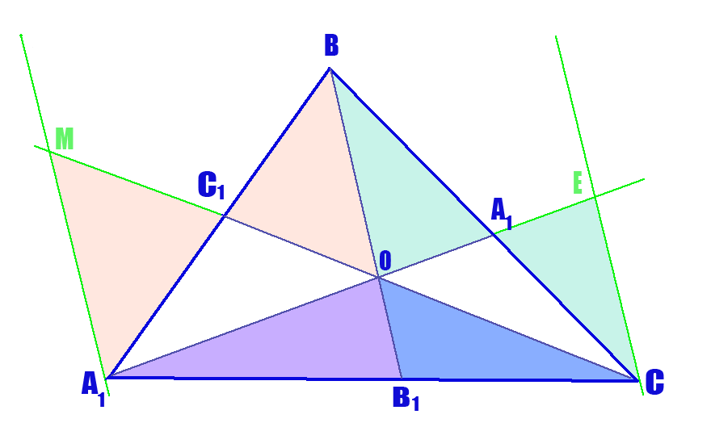

Бездна Геометрии
Теоремы
Пусть точки A1, B1, C1 лежат на сторонах треугольника BC, AC и AB соответственно. Пусть отрезки AA1, BB1, CC1 пересекаются в одной точке O. Тогда:
(AC1 / C1B) * (BA1 / A1C) * (CB1 / B1A) = 1
Д.п. Через точки А и С проведём прямые a и b такие, что a||b||BB1,
а также продолжим отрезок СС1 за точку С1 до пересечения с прямой a в точке М, отрезок АА1 за точку А1 до пересечения с прямой b в точке Е.
Рассмотрим △AMC1 и △BOC1:
∠MC1A = ∠BC1O как вертикальные, ∠AMC1 = ∠BOC1 как накрест лежащие при параллельных прямых a и ВВ1 =>
△AMC1 подобен △BOC1 по I признаку подобия =>
AC1 / C1B = AM / BO;
Рассмотрим △BOA1 и △CEA1:
∠BA1O = ∠EA1C как вертикальные, ∠BOA1 = ∠CEA1 как накрест лежащие при параллельных прямых b и BB1 =>
△BOA1 подобен △CEA1 по I признаку подобия =>
BA1 / A1C = BO / EC;
Рассмотрим △AEC и △AOB1:
∠A – общий, ∠AOB1 = ∠AEC как соответственные при параллельных прямых ВВ1 и b =>
△AEC подобен △AOB1 по I признаку подобия =>
AB1 / AC = OB1 / EC; (1)
Рассмотрим △AMC и △B1OC:
∠C – общий, ∠COB1 = ∠CMA как соответственные при параллельных прямых BB1 и a =>
△AMC подобен △B1OC по I признаку подобия =>
B1C / AC = OB1 / AM; (2)
Поделим (2) на (1):
B1C / AB1 = EC / AM;
Получаем: (AC1 / C1B) * (BA1 / A1C) * (CB1 / B1A) = (AM / BO) * (BO / EC) * (EC / AM) = 1;
Теорема доказана.
